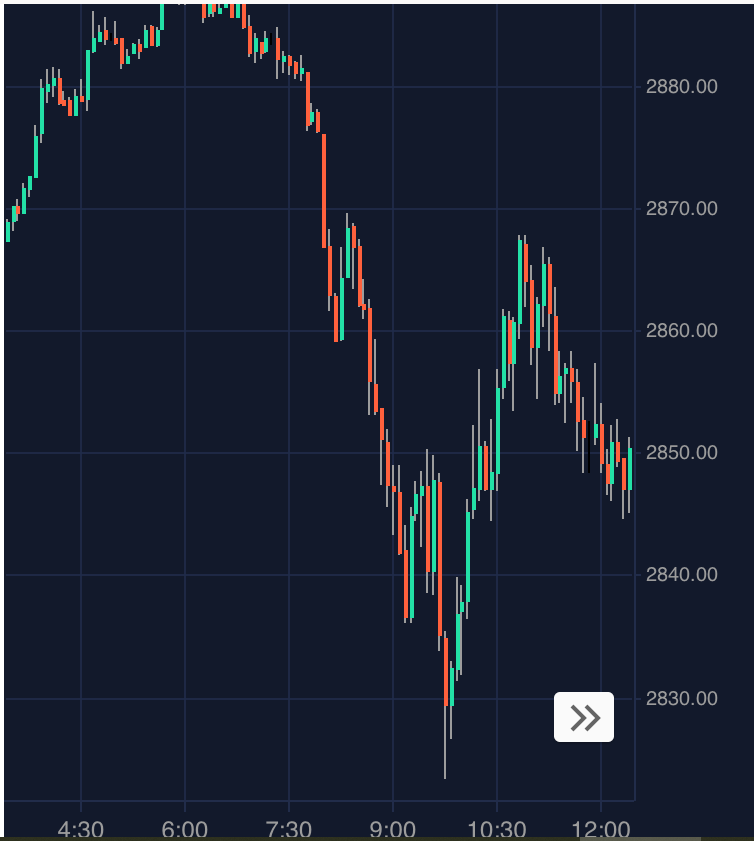
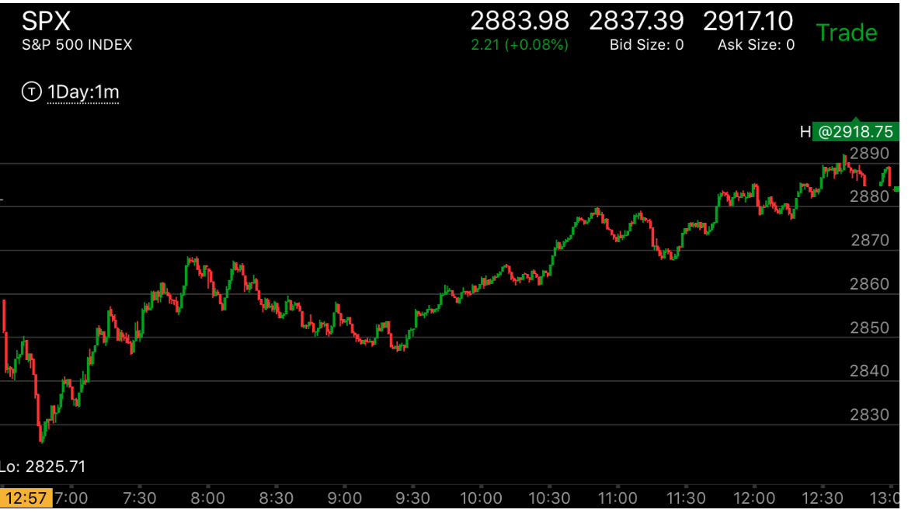

5 浪走势的运动和反转
- 如果第一浪缓慢启动，后来变得很快很大，第二浪比较慢，幅度也很大，第三浪速度超过了第二浪，那么反转的时候，
要看第三浪是否超过第一浪，如果超过了第一浪，那么反转走势会超过第一浪的开始。如果浪很大，在每一浪的开始，
都会形成一个阻力点，如果反弹的时候，在这个阻力点发生比较快速的运动，那么在这个地方会有很大的回调。
回调后，再次反弹越过阻力点。
- 这个走势如果发生在多日，第一浪的幅度比较大，第二浪比较小。第三浪超过第一浪。这样就反转了。在第三浪发生的当日，
对于下跌浪，它可能低开低走。这时可以根据第一浪的幅度和它具体的迹象来判断它的跌幅。


图示：开盘前，东部时间7：30大跌。跌幅20个点。立刻反弹后，再次下跌。
这次下跌比较慢，下跌了25个点，也是很快就反弹了。然后再次下跌。这次跌速很快，幅度是25个点。这样就彻底反转了第一浪。
不看开盘前的走势，无法知道这个是一个5浪下跌走势。也无法知道它在什么地方反转。和反转到什么地方。
比较速度，应该比较期货的速度，这样可以看到最后一浪速度很快，幅度很大。它在开盘后的反弹，8：00到达了第二浪下跌的开始，
这个是个阻力点。而它恰好加速上涨。这样就形成了一个暂时的顶部部。9：20出现了加速下跌，这样就见底了。
10：50是第一浪下跌的顶部，再次成为了临时顶部，它回调后，再次上涨。回调形成了一个两段下跌走势。再次上涨。
收盘前，到了2890，这个是第一浪开始的地方。就是开始走平的地方，因为第一浪被完全反转，所以这个走势可以到达第一浪最高开始的
地方。


图示：这个是两天加上一夜的时间，形成了5浪下跌。第一浪下跌50个点。第二浪是晚上下跌的，20个点，第三浪是白天低开走低，
也跌了50多点。反转了。它一晚上，都在高于最低点的地方震荡，其实已经反转了。根据这个走势，它需要跌破低点。因为这个是多日的走势，所以当天开盘，
它是先走低一个bar，表示是向下的方向。然后快速冲高，然后走平，这样冲高的加速坐实了。虽然这个没有叠加走势，但是速度很快加上走平。已经是加上了。它然后大跌。立刻拉回原位，然后再次小跌。
拉回。这样也符合了相对弱势的下跌。这三个条件都指向了下跌是唯一的方向。果然大跌。然后它开始反弹，越过了高点，创新高。